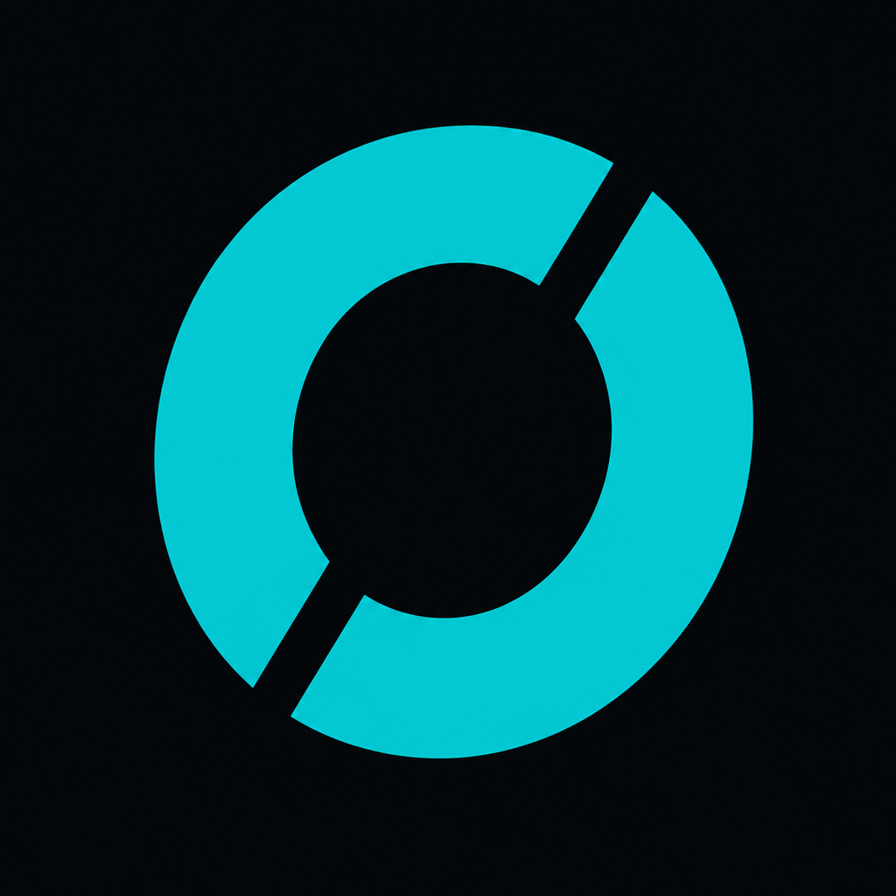

Onus
A straightforward workout tracker for iPhone and Apple Watch — build programs, log sets in real time, and watch your progress and personal records add up.
Screenshots
Onus on iPhone, in both Light and Dark mode, and the standalone Apple Watch app. Tap any screenshot to zoom in.
iPhone
Apple Watch
Onus runs as a standalone watchOS appFeatures
Everything below is built into Onus — no add-ons, no in-app unlocks required to use them.
Private by design
No sign-up and no account. Open the app and start logging — your data lives on your device and, optionally, your own private iCloud.
Programs & workouts
Group related workouts into programs (like a Push/Pull/Legs split), mark one Current to feature it on Home, and edit every detail freely.
Quick-start anywhere
Launch any Active workout pre-filled with its planned exercises and targets, right from Home on iPhone or directly from your Apple Watch.
Built for real-time logging
A custom numeric keypad, your previous weight and reps shown inline, and a one-tap Complete checkmark for every set.
Supersets & circuits
Group two or more exercises to perform back-to-back, with per-group rest settings and round tracking built in.
Automatic rest timer
Starts the moment you complete a set, keeps counting in the background, and alerts you with sound when it's done.
Personal records
Onus detects new PRs automatically, celebrates them with a trophy animation, and highlights them everywhere they appear.
Exercise library
A full built-in catalog filterable by muscle group and equipment, plus your own custom exercises and in-app form-video lookups.
History & weekly summary
Every completed session logged in detail, with a weekly rollup of workouts, volume, and average duration.
Progress graphs
Track 1RM estimate, top set, volume, or max reps over time for any exercise, with PR points called out on the chart.
Standalone Apple Watch app
Start, log, and finish an entire workout from your wrist — no iPhone nearby required — plus Now Playing controls and a complication.
Tuned to how you train
Pounds or kilograms, per-muscle-group weight increments, and configurable rest timer defaults and previous-set behavior.
Export, import & iCloud backup
Export history as CSV, share programs as JSON, and let Onus back itself up automatically to your own private iCloud.
Apple Health integration
Reads heart rate and active energy to enrich your summaries, and writes Watch workouts back to Health automatically.
Do I need to create an account to use Onus?
No. There's no sign-up and no account — open the app and start logging your first workout right away.
Is Onus free, or does it have in-app purchases?TODO
TODO: confirm Onus's pricing model (free, paid up-front, or subscription) and, if applicable, add instructions here for restoring purchases via Settings → App Store → your Apple ID.
How do I back up my data or move it to a new iPhone?
Onus automatically saves a private backup of your programs, workouts, and history to your own iCloud Drive after workouts and while the app is running. You can also trigger a manual backup or restore from Settings → Import/Export Data → iCloud Backup. Restoring only adds data — it never deletes anything already on your device.
You can also export your workout history as a CSV, or export programs and workouts as a JSON file to share or re-import elsewhere, from the same Settings screen.
How do I delete my data?
Since Onus doesn't use an account or a server, deleting the app deletes your data with it — unless you have an Onus iCloud backup or an iOS-level iCloud device backup enabled. To remove an Onus iCloud backup specifically, go to Settings → [your name] → iCloud → Apps Using iCloud on your iPhone.
Why don't I see a program on Home or on my Apple Watch?
Only programs marked Active in the Workouts tab show up on Home or sync to your Apple Watch. Open the program in the Workouts tab and mark it Active to make it available to quick-start.
Can I use Onus without an Apple Watch?
Yes. The Apple Watch app is optional — everything can be logged from iPhone alone. Note that workouts logged from iPhone without the Watch aren't written to Apple Health; only Watch-tracked workouts are.
Why is my calorie count labeled "Estimated"?
When your Apple Watch doesn't supply a measured calorie value, Onus estimates it using your body mass from Apple Health. This is clearly labeled "Estimated" wherever it appears. You can review or revoke Onus's Health access anytime in Settings → Privacy & Security → Health → Onus.
Where do the exercise form-video links go?
The Exercise Library's lookup menu opens an in-app browser to YouTube, muscleandstrength.com, musclewiki.com, or the free-exercise-db project, depending on which you choose. These are third-party sites subject to their own privacy policies — see our Privacy Policy for details.
The app isn't working as expected — what should I try?
Make sure you're on the latest version of Onus and iOS/watchOS, then try force-quitting and reopening the app. If you're using the Watch app, confirm it's paired and reachable in the Watch app on iPhone. If the problem persists, reach out to support with a description of what happened.
Support
Have a question, found a bug, or want to request a feature?
Email us and we'll get back to you as soon as we can.
TODO: replace with your preferred support contact if you'd rather not use this address, and consider adding expected response time.
Privacy Policy
The short version: Onus doesn't collect, transmit, or sell any of your data. Read the full policy for details on iCloud backup, HealthKit, and third-party links.
- No analytics, ads, or third-party tracking of any kind
- All workout data stored locally on your device
- iCloud backups go only to your own private iCloud account
- Health data never leaves Apple's HealthKit ecosystem